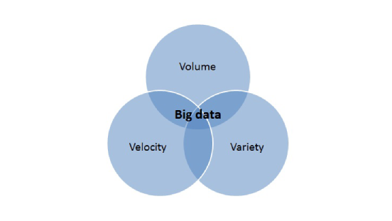
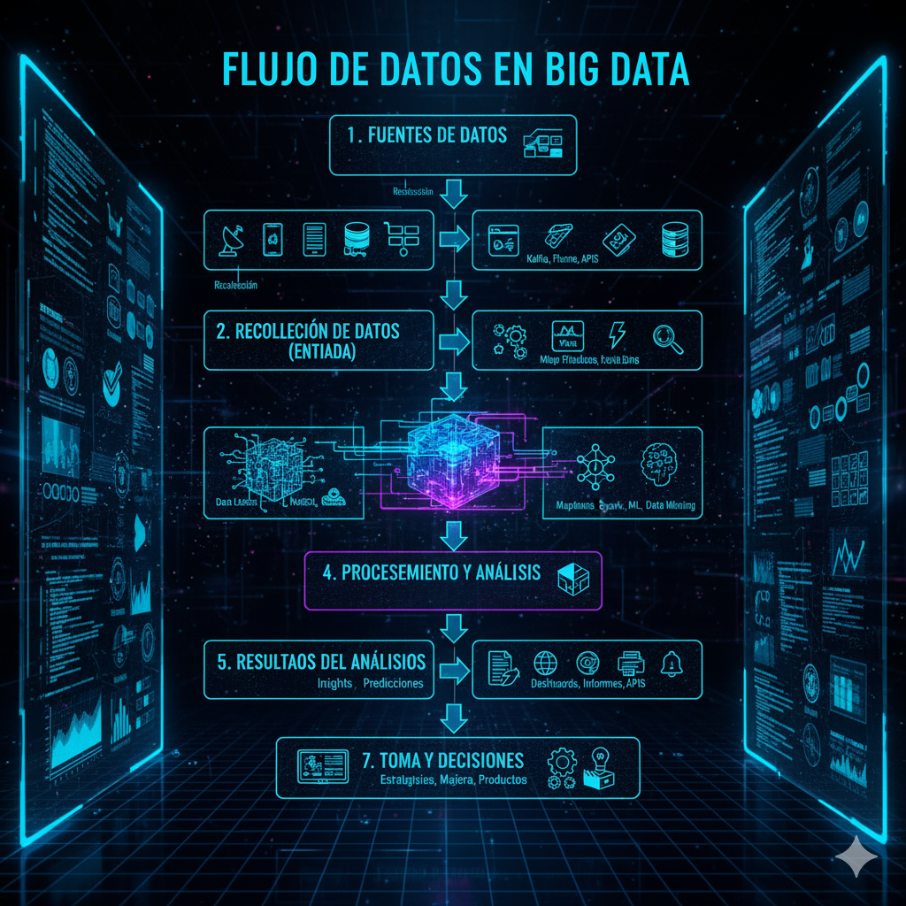

¡El Universo de los Datos!
Cada vez que usas tu móvil, ves un vídeo en internet, compras algo online o incluso caminas por la calle, ¡estás generando datos! Hoy en día, se produce una cantidad de información tan enorme que la llamamos Datos masivos o Big Data.
Pero, ¿qué hacemos con tantos datos? ¿Cómo los organizamos, los entendemos y los usamos para tomar decisiones? En esta unidad, vamos a explorar este fascinante mundo donde los datos se convierten en conocimiento.
- - ¡Una montaña de datos!
1. ¿Qué es Big Data? Las 3 "V"
El Big Data se refiere a conjuntos de datos tan grandes y complejos que los métodos tradicionales de procesamiento de datos no son suficientes para manejarlos. Se caracteriza por las "3 V":
- Volumen: La cantidad de datos es gigantesca (terabytes, petabytes, exabytes). Piensa en todos los vídeos de YouTube o las fotos de Instagram.
- Velocidad: Los datos se generan y se mueven a una velocidad increíble. Por ejemplo, los mensajes en redes sociales o las transacciones bancarias.
- Variedad: Los datos vienen en muchos formatos diferentes: textos, imágenes, vídeos, audios, datos de sensores, etc.
El Big Data nos permite descubrir patrones, tendencias y asociaciones, especialmente relacionadas con el comportamiento humano y las interacciones.

- - Volumen, Velocidad, Variedad.
¡Actividad Práctica! Nombra un ejemplo de Big Data que uses a diario y explica cómo se relaciona con al menos una de las "3 V" (Volumen, Velocidad o Variedad).
2. Visualización, Transporte y Almacenaje de Datos
Con tantos datos, necesitamos formas inteligentes de manejarlos:
- Visualización de Datos: Es el arte de presentar los datos de forma gráfica (gráficos de barras, circulares, mapas, infografías) para que sean fáciles de entender. Una buena visualización nos ayuda a ver patrones y tendencias rápidamente.
- Transporte de Datos: Se refiere a cómo los datos se mueven de un lugar a otro. Esto ocurre a través de redes (como internet) y requiere una infraestructura potente para manejar la velocidad y el volumen.
- Almacenaje de Datos: Con la cantidad de datos que se generan, necesitamos lugares especiales para guardarlos. Esto se hace en grandes centros de datos (servidores) o en la "nube", que son redes de servidores remotos.
- - El viaje de los datos.
¡Actividad Práctica! Busca un ejemplo de visualización de datos (ej. un gráfico de la evolución del tiempo, un mapa de casos de alguna enfermedad) y explica qué información te transmite de forma clara.
3. Entrada y Salida de Datos en Big Data
En el contexto del Big Data, la Entrada (Input) son todas las fuentes de donde provienen los datos, y la Salida (Output) son los resultados o acciones que se generan a partir del análisis de esos datos.
Ejemplos en Big Data:
- Entrada:
- Sensores de dispositivos IoT (temperatura, ubicación).
- Interacciones en redes sociales (likes, comentarios, publicaciones).
- Transacciones de compra en tiendas online.
- Registros de tráfico web (qué páginas visitas).
- Salida:
- Recomendaciones personalizadas (productos, películas).
- Alertas sobre el tráfico o el tiempo.
- Informes de tendencias de mercado para empresas.
- Decisiones automáticas (ej. ajuste de precios dinámico).

- - El flujo de datos en acción.
¡Actividad Práctica! Piensa en una aplicación de streaming de música (como Spotify). ¿Qué datos crees que son "entrada" y qué "salida" genera para ti?
4. Introducción a los Metadatos: Datos sobre Datos
Los metadatos son, literalmente, "datos sobre datos". Son información que describe otros datos. Nos ayudan a organizar, encontrar y entender mejor la inmensa cantidad de información que existe.
Ejemplos de metadatos:
- De una foto: Fecha y hora en que se tomó, ubicación (GPS), modelo de cámara, tamaño del archivo.
- De una canción: Título, artista, álbum, género, duración.
- De un libro: Título, autor, fecha de publicación, número de páginas, editorial.
Los metadatos son cruciales para que los sistemas de Big Data puedan buscar, filtrar y analizar la información de manera eficiente.
- - Información que describe la información.
¡Actividad Práctica! Elige una foto de tu móvil y busca su información (metadatos). ¿Qué datos puedes encontrar sobre ella?
Proyecto Final de Unidad: "Analizando mis Datos"
Para este proyecto, vas a elegir un conjunto de datos (real o imaginario) y realizar un pequeño análisis para extraer información y visualizarla. El objetivo es que comprendas la naturaleza de los datos y cómo se pueden usar para obtener conocimiento.
Puedes elegir un tema como:
- Datos de tus hábitos de uso del móvil (tiempo de pantalla, apps más usadas - si puedes acceder a ellos).
- Datos de puntuaciones de tus videojuegos favoritos.
- Datos climáticos de tu ciudad (temperaturas, lluvias - puedes buscar datos sencillos online).
- Datos de consumo de energía en tu casa (si tienes acceso a un contador inteligente o puedes estimarlos).
- Datos de tus pasos diarios (si tienes una pulsera de actividad).
Tareas a Realizar:
- 1. Recopilación y Descripción de Datos:
- Elige un tema y describe el tipo de datos que vas a "analizar".
- ¿De dónde provienen estos datos? ¿Qué metadatos crees que tendrían?
- ¿Qué problema o pregunta quieres resolver con estos datos? (Ej. ¿cuál es el día de la semana que más uso el móvil?).
- 2. Análisis y Visualización:
- Imagina cómo podrías analizar estos datos para encontrar patrones o respuestas. (Ej. Contar cuántas horas usas cada app).
- Propón al menos una forma de visualizar estos datos (ej. un gráfico de barras para el uso de apps por día, un gráfico circular para la distribución de géneros musicales). Puedes dibujar un boceto del gráfico.
- Compara tus datos con alguna expectativa o con datos de otros compañeros (si es posible).
- 3. Reflexión Crítica:
- ¿Qué conclusiones puedes sacar de tu análisis?
- ¿Crees que los datos son siempre "correctos" o "completos"? ¿Por qué es importante tener un espíritu crítico al analizar datos?
- 4. Formato de Presentación:
Elige uno de los siguientes formatos para presentar tu investigación:
- Una presentación digital (ej. con Canva, Genially, Google Slides).
- Un póster informativo (digital o físico) con los gráficos dibujados.
- Un informe escrito con las respuestas a las preguntas.
Criterios trabajados:
- 4.1. Conocer la naturaleza de los distintos tipos de datos generados hoy en día, siendo capaces de analizarlos, visualizarlos y compararlos, empleando a su vez un espíritu crítico y científico.
Cuestionario: ¡Demuestra lo que sabes de Big Data!
Responde a las siguientes preguntas para comprobar lo que has aprendido en esta unidad.